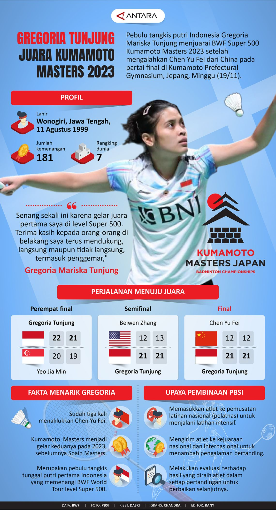

Blog
(Sudut khusus pilihan rizqi)
Gregoria Mariska Tunjung Juara Kumamoto Master 2023
November 2023
Tunggal putri andalan Indonesia Gregoria Mariska Tunjung, berhasil mendapatkan medali emas di BWF Super 500 Kumamoto Master 2023 setelah mengalahkan Chen Yu Fei[4] dari China dengan 2 set langsung. Kemenangan jorji di BWF Super 500 Kumamoto Master 2023 merupakan kemenangan yang sangat berkesan, dikarenakan setelah 17 tahun lamanya tunggal putri dari Indonesia akhirnya bisa kembali menjadi juara di BWF Super 500 Kumamoto Master, dan dengan menjadi juara di BWF Super 500 Kumamoto Master 2023 jorji dipastikan lolos ke World Tour Final 2023 yang mana akan digelar bulan Desember mendatang.